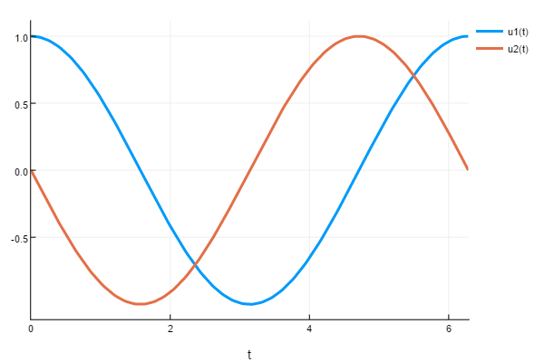

Event Handling and Callback Functions
DifferentialEquations.jl allows for using callback functions to inject user code into the solver algorithms. It allows for safely and accurately applying events and discontinuities. Multiple callbacks can be chained together, and these callback types can be used to build libraries of extension behavior.
The Callback Types
The callback types are defined as follows. There are three primitive callback types: the ContinuousCallback, DiscreteCallback and the VectorContinuousCallback. The ContinuousCallback is applied when a continuous condition function hits zero. This type of callback implements what is known in other problem solving environments as an Event. A DiscreteCallback is applied when its condition function is true. The VectorContinuousCallback works like a vector of ContinuousCallbacks and lets the user specify which callback is called when.
ContinuousCallback
DiffEqBase.ContinuousCallback — TypeContinuousCallback(condition,affect!,affect_neg!;
initialize = INITIALIZE_DEFAULT,
idxs = nothing,
rootfind=true,
save_positions=(true,true),
interp_points=10,
abstol=10eps(),reltol=0)function ContinuousCallback(condition,affect!;
initialize = INITIALIZE_DEFAULT,
idxs = nothing,
rootfind=true,
save_positions=(true,true),
affect_neg! = affect!,
interp_points=10,
abstol=10eps(),reltol=0)Contains a single callback whose condition is a continuous function. The callback is triggered when this function evaluates to 0.
Arguments
condition: This is a functioncondition(u,t,integrator)for declaring when the callback should be used. A callback is initiated if the condition hits0within the time interval. See the Integrator Interface documentation for information aboutintegrator.affect!: This is the functionaffect!(integrator)where one is allowed to modify the current state of the integrator. If you do not pass anaffect_neg!function, it is called whenconditionis found to be0(at a root) and the cross is either an upcrossing (from negative to positive) or a downcrossing (from positive to negative). You need to explicitly passnothingas theaffect_neg!argument if it should only be called at upcrossings, e.g.ContinuousCallback(condition, affect!, nothing). For more information on what can be done, see the Integrator Interface manual page. Modifications touare safe in this function.affect_neg!=affect!: This is the functionaffect_neg!(integrator)where one is allowed to modify the current state of the integrator. This is called whenconditionis found to be0(at a root) and the cross is an downcrossing (from positive to negative). For more information on what can be done, see the Integrator Interface manual page. Modifications touare safe in this function.rootfind=true: This is a boolean for whether to rootfind the event location. If this is set totrue, the solution will be backtracked to the point wherecondition==0. Otherwise the systems and theaffect!will occur att+dt.interp_points=10: The number of interpolated points to check the condition. The condition is found by checking whether any interpolation point / endpoint has a different sign. Ifinterp_points=0, then conditions will only be noticed if the sign ofconditionis different attthan att+dt. This behavior is not robust when the solution is oscillatory, and thus it's recommended that one use some interpolation points (they're cheap to compute!).0within the time interval.save_positions=(true,true): Boolean tuple for whether to save before and after theaffect!. This saving will occur just before and after the event, only at event times, and does not depend on options likesaveat,save_everystep, etc. (i.e. ifsaveat=[1.0,2.0,3.0], this can still add a save point at2.1if true). For discontinuous changes like a modification touto be handled correctly (without error), one should setsave_positions=(true,true).idxs=nothing: The components which will be interpolated into the condition. Defaults tonothingwhich meansuwill be all components.initialize: This is a function (c,u,t,integrator) which can be used to initialize the state of the callbackc. It should modify the argumentcand the return is ignored.abstol=1e-14&reltol=0: These are used to specify a tolerance from zero for the rootfinder: if the starting condition is less than the tolerance from zero, then no root will be detected. This is to stop repeat events happening just after a previously rootfound event.
DiscreteCallback
DiffEqBase.DiscreteCallback — TypeDiscreteCallback(condition,affect!;
initialize = INITIALIZE_DEFAULT,
save_positions=(true,true))Arguments
condition: This is a functioncondition(u,t,integrator)for declaring when the callback should be used. A callback is initiated if the condition evaluates totrue. See the Integrator Interface documentation for information aboutintegrator.affect!: This is the functionaffect!(integrator)where one is allowed to modify the current state of the integrator. For more information on what can be done, see the Integrator Interface manual page.save_positions: Boolean tuple for whether to save before and after theaffect!. This saving will occur just before and after the event, only at event times, and does not depend on options likesaveat,save_everystep, etc. (i.e. ifsaveat=[1.0,2.0,3.0], this can still add a save point at2.1if true). For discontinuous changes like a modification touto be handled correctly (without error), one should setsave_positions=(true,true).initialize: This is a function (c,u,t,integrator) which can be used to initialize the state of the callbackc. It should modify the argumentcand the return is ignored.
CallbackSet
DiffEqBase.CallbackSet — Typestruct CallbackSet{T1<:Tuple, T2<:Tuple} <: DiffEqBase.DECallbackMultiple callbacks can be chained together to form a CallbackSet. A CallbackSet is constructed by passing the constructor ContinuousCallback, DiscreteCallback, VectorContinuousCallback or other CallbackSet instances:
CallbackSet(cb1,cb2,cb3)You can pass as many callbacks as you like. When the solvers encounter multiple callbacks, the following rules apply:
ContinuousCallbacks andVectorContinuousCallbacks are applied beforeDiscreteCallbacks. (This is because they often implement event-finding that will backtrack the timestep to smaller thandt).- For
ContinuousCallbacks andVectorContinuousCallbacks, the event times are found by rootfinding and only the firstContinuousCallbackorVectorContinuousCallbackaffect is applied. - The
DiscreteCallbacks are then applied in order. Note that the ordering only matters for the conditions: if a previous callback modifiesuin such a way that the next callback no longer evaluates condition totrue, itsaffectwill not be applied.
VectorContinuousCallback
DiffEqBase.VectorContinuousCallback — TypeVectorContinuousCallback(condition,affect!,affect_neg!,len;
initialize = INITIALIZE_DEFAULT,
idxs = nothing,
rootfind=true,
save_positions=(true,true),
interp_points=10,
abstol=10eps(),reltol=0)VectorContinuousCallback(condition,affect!,len;
initialize = INITIALIZE_DEFAULT,
idxs = nothing,
rootfind=true,
save_positions=(true,true),
affect_neg! = affect!,
interp_points=10,
abstol=10eps(),reltol=0)This is also a subtype of AbstractContinuousCallback. CallbackSet is not feasible when you have a large number of callbacks, as it doesn't scale well. For this reason, we have VectorContinuousCallback - it allows you to have a single callback for multiple events.
Arguments
condition: This is a functioncondition(out, u, t, integrator)which should save the condition value in the arrayoutat the right index. Maximum index ofoutshould be specified in thelenproperty of callback. So this way you can have a chain oflenevents, which would cause theith event to trigger whenout[i] = 0.affect!: This is a functionaffect!(integrator, event_index)which lets you modifyintegratorand it tells you about which event occured usingevent_idxi.e. gives you indexifor whichout[i]came out to be zero.len: Number of callbacks chained. This is compulsory to be specified.
Rest of the arguments have the same meaning as in ContinuousCallback.
Using Callbacks
The callback type is then sent to the solver (or the integrator) via the callback keyword argument:
sol = solve(prob,alg,callback=cb)You can supply nothing, a single DiscreteCallback or ContinuousCallback or VectorContinuousCallback, or a CallbackSet.
Note About Saving
When a callback is supplied, the default saving behavior is turned off. This is because otherwise events would "double save" one of the values. To re-enable the standard saving behavior, one must have the first save_positions value be true for at least one callback.
Modifying the Stepping Within A Callback
A common issue with callbacks is that they cause a large discontinuous change, and so it may be wise to pull down dt after such a change. To control the timestepping from a callback, please see the timestepping controls in the integrator interface. Specifically, set_proposed_dt! is used to set the next stepsize, and terminate! can be used to cause the simulation to stop.
DiscreteCallback Examples
Example 1: Interventions at Preset Times
Assume we have a patient whose internal drug concentration follows exponential decay, i.e. the linear ODE with a negative coefficient:
using DifferentialEquations
function f(du,u,p,t)
du[1] = -u[1]
end
u0 = [10.0]
const V = 1
prob = ODEProblem(f,u0,(0.0,10.0))
sol = solve(prob,Tsit5())
using Plots; plot(sol)
Now assume we wish to give the patient a dose of 10 at time t==4. For this, we can use a DiscreteCallback which will only be true at t==4:
condition(u,t,integrator) = t==4
affect!(integrator) = integrator.u[1] += 10
cb = DiscreteCallback(condition,affect!)If we then solve with this callback enabled, we see no change:
sol = solve(prob,Tsit5(),callback=cb)
plot(sol)
The reason there is no change is because the DiscreteCallback only applies at a specific time, and the integrator never hit that time. Thus we would like to force the ODE solver to step exactly at t=4 so that the condition can be applied. We can do that with the tstops argument:
sol = solve(prob,Tsit5(),callback=cb,tstops=[4.0])
plot(sol)
and thus we achieve the desired result.
Performing multiple doses then just requires that we have multiple points which are hit. For example, to dose at time t=4 and t=8, we can do the following:
dosetimes = [4.0,8.0]
condition(u,t,integrator) = t ∈ dosetimes
affect!(integrator) = integrator.u[1] += 10
sol = solve(prob,Tsit5(),callback=cb,tstops=dosetimes)
plot(sol)
We can then use this mechanism to make the model arbitrarily complex. For example, let's say there's now 3 dose times, but the dose only triggers if the current concentration is below 1.0. Additionally, the dose is now 10t instead of just 10. This model is implemented as simply:
dosetimes = [4.0,6.0,8.0]
condition(u,t,integrator) = t ∈ dosetimes && (u[1] < 1.0)
affect!(integrator) = integrator.u[1] += 10integrator.t
sol = solve(prob,Tsit5(),callback=cb,tstops=dosetimes)
plot(sol)
PresetTimeCallback
Because events at preset times is a very common occurrence, DifferentialEquations.jl provides a pre-built callback in the Callback Library. The PresetTimeCallback(tstops,affect!) takes an array of times and an affect! function to apply. Thus to do the simple 2 dose example with this callback, we could do the following:
dosetimes = [4.0,8.0]
affect!(integrator) = integrator.u[1] += 10
cb = PresetTimeCallback(dosetimes,affect!)
sol = solve(prob,Tsit5(),callback=cb)
plot(sol)
Notice that this version will automatically set the tstops for you.
Example 2: A Control Problem
Another example of a DiscreteCallback is the control problem demonstrated on the DiffEq-specific arrays page.
Example 3: AutoAbstol
MATLAB's Simulink has the option for an automatic absolute tolerance. In this example we will implement a callback which will add this behavior to any JuliaDiffEq solver which implments the integrator and callback interface.
The algorithm is as follows. The default value is set to start at 1e-6, though we will give the user an option for this choice. Then as the simulation progresses, at each step the absolute tolerance is set to the maximum value that has been reached so far times the relative tolerance. This is the behavior that we will implement in affect!.
Since the effect is supposed to occur every timestep, we use the trivial condition:
condition = function (u,t,integrator)
true
endwhich always returns true. For our effect we will overload the call on a type. This type will have a value for the current maximum. By doing it this way, we can store the current state for the running maximum. The code is as follows:
mutable struct AutoAbstolAffect{T}
curmax::T
end
# Now make `affect!` for this:
function (p::AutoAbstolAffect)(integrator)
p.curmax = max(p.curmax,integrator.u)
integrator.opts.abstol = p.curmax * integrator.opts.reltol
u_modified!(integrator,false)
endThis makes affect!(integrator) use an internal mutating value curmax to update the absolute tolerance of the integrator as the algorithm states.
Lastly, we can wrap it in a nice little constructor:
function AutoAbstol(save=true;init_curmax=1e-6)
affect! = AutoAbstolAffect(init_curmax)
condtion = (u,t,integrator) -> true
save_positions = (save,false)
DiscreteCallback(condtion,affect!,save_positions=save_positions)
endThis creates the DiscreteCallback from the affect! and condition functions that we implemented. Now
cb = AutoAbstol(save=true;init_curmax=1e-6)returns the callback that we created. We can then solve an equation using this by simply passing it with the callback keyword argument. Using the integrator interface rather than the solve interface, we can step through one by one to watch the absolute tolerance increase:
integrator = init(prob,BS3(),callback=cb)
at1 = integrator.opts.abstol
step!(integrator)
at2 = integrator.opts.abstol
@test at1 < at2
step!(integrator)
at3 = integrator.opts.abstol
@test at2 < at3Note that this example is contained in the Callback Library, a library of useful callbacks for JuliaDiffEq solvers.
ContinuousCallback Examples
Example 1: Bouncing Ball
Let's look at the bouncing ball. Let the first variable y is the height which changes by v the velocity, where the velocity is always changing at -g which is the gravitational constant. This is the equation:
function f(du,u,p,t)
du[1] = u[2]
du[2] = -p
endAll we have to do in order to specify the event is to have a function which should always be positive with an event occurring at 0. For now at least that's how it's specified. If a generalization is needed we can talk about this (but it needs to be "root-findable"). For here it's clear that we just want to check if the ball's height ever hits zero:
function condition(u,t,integrator) # Event when event_f(u,t) == 0
u[1]
endNotice that here we used the values u instead of the value from the integrator. This is because the values u,t will be appropriately modified at the interpolation points, allowing for the rootfinding behavior to occur.
Now we have to say what to do when the event occurs. In this case we just flip the velocity (the second variable)
function affect!(integrator)
integrator.u[2] = -integrator.u[2]
endThe callback is thus specified by:
cb = ContinuousCallback(condition,affect!)Then you can solve and plot:
u0 = [50.0,0.0]
tspan = (0.0,15.0)
p = 9.8
prob = ODEProblem(f,u0,tspan,p)
sol = solve(prob,Tsit5(),callback=cb)
plot(sol)
As you can see from the resulting image, DifferentialEquations.jl is smart enough to use the interpolation to hone in on the time of the event and apply the event back at the correct time. Thus one does not have to worry about the adaptive timestepping "overshooting" the event as this is handled for you. Notice that the event macro will save the value(s) at the discontinuity.
The callback is robust to having multiple discontinuities occur. For example, we can integrate for long time periods and get the desired behavior:
u0 = [50.0,0.0]
tspan = (0.0,100.0)
prob = ODEProblem(f,u0,tspan,p)
sol = solve(prob,Tsit5(),callback=cb)
plot(sol,plotdensity=10000)
Example 2: Terminating an Integration
In many cases you might want to terminate an integration when some condition is satisfied. To terminate an integration, use terminate!(integrator) as the affect! in a callback.
In this example we will solve the differential equation:
u0 = [1.,0.]
function fun2(du,u,p,t)
du[2] = -u[1]
du[1] = u[2]
end
tspan = (0.0,10.0)
prob = ODEProblem(fun2,u0,tspan)which has cosine and -sine as the solutions respectively. We wish to solve until the sine part, u[2] becomes positive. There are two things we may be looking for.
A DiscreteCallback will cause this to halt at the first step such that the condition is satisfied. For example, we could use:
condition(u,t,integrator) = u[2]>0
affect!(integrator) = terminate!(integrator)
cb = DiscreteCallback(condition,affect!)
sol = solve(prob,Tsit5(),callback=cb)
However, in many cases we wish to halt exactly at the point of time that the condition is satisfied. To do that, we use a continuous callback. The condition must thus be a function which is zero at the point we want to halt. Thus we use the following:
condition(u,t,integrator) = u[2]
affect!(integrator) = terminate!(integrator)
cb = ContinuousCallback(condition,affect!)
sol = solve(prob,Tsit5(),callback=cb)
Note that this uses rootfinding to approximate the "exact" moment of the crossing. Analytically we know the value is pi, and here the integration terminates at
sol.t[end] # 3.1415902502224307Using a more accurate integration increases the accuracy of this prediction:
sol = solve(prob,Vern8(),callback=cb,reltol=1e-12,abstol=1e-12)
sol.t[end] # 3.1415926535896035
#π = 3.141592653589703...Now say we wish to find the when the first period is over, i.e. we want to ignore the upcrossing and only stop on the downcrossing. We do this by ignoring the affect! and only passing an affect! for the second:
condition(u,t,integrator) = u[2]
affect!(integrator) = terminate!(integrator)
cb = ContinuousCallback(condition,nothing,affect!)
sol = solve(prob,Tsit5(),callback=cb)
Notice that passing only one affect! is the same as ContinuousCallback(condition,affect!,affect!), i.e. both upcrossings and downcrossings will activate the event. Using ContinuousCallback(condition,affect!,nothing)will thus be the same as above because the first event is an upcrossing.
Example 3: Growing Cell Population
Another interesting issue is with models of changing sizes. The ability to handle such events is a unique feature of DifferentialEquations.jl! The problem we would like to tackle here is a cell population. We start with 1 cell with a protein X which increases linearly with time with rate parameter α. Since we are going to be changing the size of the population, we write the model in the general form:
const α = 0.3
function f(du,u,p,t)
for i in 1:length(u)
du[i] = α*u[i]
end
endOur model is that, whenever the protein X gets to a concentration of 1, it triggers a cell division. So we check to see if any concentrations hit 1:
function condition(u,t,integrator) # Event when event_f(u,t) == 0
1-maximum(u)
endAgain, recall that this function finds events as when condition==0, so 1-maximum(u) is positive until a cell has a concentration of X which is 1, which then triggers the event. At the event, we have that the cell splits into two cells, giving a random amount of protein to each one. We can do this by resizing the cache (adding 1 to the length of all of the caches) and setting the values of these two cells at the time of the event:
function affect!(integrator)
u = integrator.u
resize!(integrator,length(u)+1)
maxidx = findmax(u)[2]
Θ = rand()
u[maxidx] = Θ
u[end] = 1-Θ
nothing
endAs noted in the Integrator Interface, resize!(integrator,length(integrator.u)+1) is used to change the length of all of the internal caches (which includes u) to be their current length + 1, growing the ODE system. Then the following code sets the new protein concentrations. Now we can solve:
callback = ContinuousCallback(condition,affect!)
u0 = [0.2]
tspan = (0.0,10.0)
prob = ODEProblem(f,u0,tspan)
sol = solve(prob,callback=callback)The plot recipes do not have a way of handling the changing size, but we can plot from the solution object directly. For example, let's make a plot of how many cells there are at each time. Since these are discrete values, we calculate and plot them directly:
plot(sol.t,map((x)->length(x),sol[:]),lw=3,
ylabel="Number of Cells",xlabel="Time")
Now let's check-in on a cell. We can still use the interpolation to get a nice plot of the concentration of cell 1 over time. This is done with the command:
ts = range(0, stop=10, length=100)
plot(ts,map((x)->x[1],sol.(ts)),lw=3,
ylabel="Amount of X in Cell 1",xlabel="Time")
Notice that every time it hits 1 the cell divides, giving cell 1 a random amount of X which then grows until the next division.
Note that one macro which was not shown in this example is deleteat! on the caches. For example, to delete the second cell, we could use:
deleteat!(integrator,2)This allows you to build sophisticated models of populations with births and deaths.
VectorContinuousCallback Example
Example 1: Bouncing Ball with multiple walls
This is similar to the above Bouncing Ball example, but now we have two more vertical walls, at x = 0 and x = 10.0. We have our ODEFunction as -
function f(du,u,p,t)
du[1] = u[2]
du[2] = -p
du[3] = u[4]
du[4] = 0.0
endwhere u[1] denotes y-coordinate, u[2] denotes velocity in y-direction, u[3] denotes x-coordinate and u[4] denotes velocity in x-direction. We will make a VectorContinuousCallback of length 2 - one for x axis collision, one for walls parallel to y axis.
function condition(out,u,t,integrator) # Event when event_f(u,t) == 0
out[1] = u[1]
out[2] = (u[3] - 10.0)u[3]
end
function affect!(integrator, idx)
if idx == 1
integrator.u[2] = -0.9integrator.u[2]
elseif idx == 2
integrator.u[4] = -0.9integrator.u[4]
end
end
cb = VectorContinuousCallback(condition,affect!,2)It is evident that out[2] will be zero when u[3] (x-coordinate) is either 0.0 or 10.0. And when that happens, we flip the velocity with some coefficient of restitution (0.9).
Completeting rest of the code-
u0 = [50.0,0.0,0.0,2.0]
tspan = (0.0,15.0)
p = 9.8
prob = ODEProblem(f,u0,tspan,p)
sol = solve(prob,Tsit5(),callback=cb,dt=1e-3,adaptive=false)
plot(sol,vars=(1,3))And you get the following output: